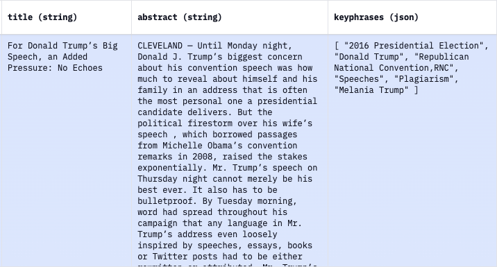

🔑 Keyphrase Extraction
Contents
🔑 Keyphrase Extraction¶
🤔 Keyphrase extraction is the task of identifying the words and phrases that represent the main topics of a document

🏆 Old but Gold!¶
PKE is an open source keyphrase extraction toolkit that implements several very good statistical and graph based methods. It’s easy to use and provides robust baseline results.
Example: 📝 Sample text: “””Mars Rovers Relay Images Through Mars Express European Space Agency – ESAs Mars Express has relayed pictures from one of NASA’s Mars rovers for the first time, as part of a set of interplanetary networking demonstrations. The demonstrations pave the way for future Mars missions to draw on joint interplanetary networking capabilities…”””
🔑 Keyphrases:
rank 0: mars rovers relay images (0.20)
rank 1: mars express european space agency (0.16)
rank 2: interplanetary networking demonstrations (0.09)
rank 3: pictures (0.07)
rank 4: nasa (0.07)
🌟 Github: https://github.com/boudinfl/pke
📖 Paper: https://aclanthology.org/C16-2015.pdf
#nlp #datascience #github
📚 Multi-Document Keyphrase Extraction¶
Multi-Document Keyphrase Extraction (MDKE) is the task of extracting important phrases from a collection of documents.
MDKE can help analyze text clustering results to identify the important terms within each cluster of documents.
Contrary to single-document keyphrase extraction (SDKE), which has several well-known methods like RAKE, Text Rank, MultipartiteRank, and KeyBERT, MDKE is relatively under-studied in the literature.
The image below shows an example of SDKE in action.
In the paper “Multi-Document Keyphrase Extraction: A Literature Review”, the authors take two single-to-multi-document approaches as described below.
✅ Concat method: All the documents within a cluster are concatenated into a single big document and fed into the keyphrase extraction algorithm.
✅ Merge method: For each cluster, the keyphrase extraction algorithm is fed one document at a time, and keyphrases from all the individual documents are merged and ranked in descending order of their document frequency (the number of documents containing the keyphrase)
✅ There is some cleanup like stemming and de-duplication.
In terms of performance on their newly created dataset:
1️⃣ In general, the Merge method tends to do better across most of the SDKE algorithms tested
2️⃣ MultipartiteRank seems to be the best BUT is very slow and not very scalable in production
Thus a good starting point for MDKE is:
1️⃣ Pick any fast SDKE algorithm like Text Rank
2️⃣ Run the algorithm on each document within your cluster
3️⃣ Merge all the key phrases from all the documents in your cluster and rank them using the document frequency. You can use an IDF to penalize very frequent keyphrases too.
I regularly post about practical and applied data science. If you like my posts, let’s connect!
#datascience #nlp #researchpaper #algorithms